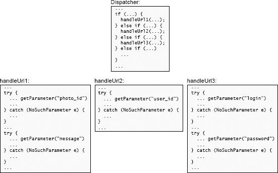
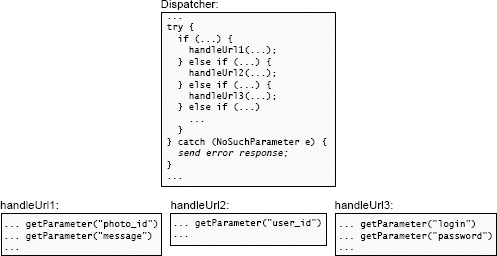

第10章 通过设计消除错误
异常处理是软件系统中最严重的复杂性来源之一。处理特殊情况的代码，天生就比处理正常情况的代码难写，而开发者定义异常时，往往没有考虑如何处理它们。本章先讨论异常为什么会带来不成比例的复杂性，再介绍如何简化异常处理。总体原则是减少必须处理异常的位置；许多情况下，可以修改操作的语义，让正常行为覆盖所有情况，无须报告异常。这也是本章标题的含义。
10.1 为什么异常增加复杂性
这里的“异常”，指任何改变程序正常控制流程的不常见情况。许多编程语言提供正式的异常机制，让底层代码抛出异常，由外围代码捕获。不过，即使不用正式的异常报告机制，也可能出现异常，例如方法返回一个特殊值，表示没有完成正常行为。这些异常形式都会增加复杂性。
一段代码可能以几种方式遇到异常：
- 调用者提供了错误的参数或配置信息。
- 被调用的方法无法完成请求的操作，例如 I/O 操作失败，或所需资源不可用。
- 分布式系统中，网络包丢失或延迟，服务器未及时响应，或者对端以预料之外的方式通信。
- 代码检测到 bug、内部不一致，或没有准备好处理的情况。
大型系统必须处理许多异常情况，分布式系统和需要容错的系统尤其如此。异常处理可能占系统全部代码的相当大一部分。
异常处理代码天生比正常路径代码难写。异常打断正常流程，通常意味着某件事没有按预期工作。出现异常时，程序员有两种应对方式，两者都可能复杂。第一种是克服异常，继续完成正在进行的工作。例如丢包后重发，数据损坏后尝试从冗余副本恢复。第二种是中止当前操作，向上报告异常。但中止也可能很复杂，因为发生异常时系统状态可能不一致，例如数据结构只初始化了一部分。异常处理代码必须恢复一致性，例如撤销异常发生前做过的修改。
异常处理代码还可能引发更多异常。以重发丢失的网络包为例：包也许只是延迟，并没有丢失，重发会让对端收到重复包，产生新的异常情况。再如从冗余副本恢复丢失的数据：冗余副本也丢失了怎么办？恢复期间发生的次生异常，往往比最初的异常更隐蔽、更复杂。如果通过中止当前操作来处理异常，还必须把中止作为另一个异常报告给调用者。为了避免异常无限连锁，开发者最终必须找到一种不会引入更多异常的处理办法。
语言提供的异常支持往往冗长笨拙，导致异常处理代码难读。例如，下面通过 Java 的对象序列化与反序列化功能，从文件读取一组推文：
try (
FileInputStream fileStream =
new FileInputStream(fileName);
BufferedInputStream bufferedStream =
new BufferedInputStream(fileStream);
ObjectInputStream objectStream =
new ObjectInputStream(bufferedStream);
) {
for (int i = 0; i < tweetsPerFile; i++) {
tweets.add((Tweet) objectStream.readObject());
}
}
catch (FileNotFoundException e) {
...
}
catch (ClassNotFoundException e) {
...
}
catch (EOFException e) {
// Not a problem: not all tweet files have full
// set of tweets.
}
catch (IOException e) {
...
}
catch (ClassCastException e) {
...
}
注释译文：这不成问题：并非每个推文文件都包含满额的推文。
还没算实际处理异常的代码，仅基本的 try-catch 样板，行数就已经超过正常操作代码。异常处理代码也很难与正常代码对应起来，例如每种异常从哪里产生，并不清楚。另一个办法是划成多个独立 try 块，极端情况下，每行可能产生异常的代码都有自己的 try。这样能看清异常的位置，但 try 块本身打断代码流程，使代码更难读；部分异常处理代码还可能在多个 try 块中重复。
很难保证异常处理代码确实能工作。有些异常，例如 I/O 错误，难以在测试环境中制造，处理代码也就难以测试。运行中的系统很少发生异常，异常处理代码很少执行，bug 可能潜伏很久。等到真正需要它们时，很可能无法正常工作。我常说的一句话是：“没有执行过的代码不能工作。”近期一项研究发现，分布式数据密集型系统中，超过90%的灾难性故障由错误处理不当引起。[1] 异常处理代码出错时，由于发生频率很低，调试也困难。
10.2 异常太多
程序员定义不必要的异常，让问题进一步恶化。多数程序员接受的教育强调检测、报告错误的重要性，他们常把它理解为“检测出的错误越多越好”。这会形成过度防御的风格：只要有一点可疑，就抛异常拒绝处理。大量无须存在的异常由此产生，增加系统复杂性。
设计 Tcl 脚本语言时，我自己也犯过这个错误。Tcl 的 unset 命令可以删除变量。我规定变量不存在时，unset 报错。当时觉得删除不存在的变量必定是 bug，Tcl 应该报告。但 unset 最常见的用途之一，是清理前面操作创建的临时状态。究竟创建了什么状态往往难以预测，操作中途终止时更是如此。最简单的办法是删除所有可能创建过的变量。unset 的定义却让这很麻烦：开发者只好把调用包在 catch 中，捕获并忽略其错误。回头看，unset 的定义是我设计 Tcl 时最大的失误之一。
异常很容易成为回避难题的工具：不去寻找清楚的处理办法，直接抛异常，把问题交给调用者。有人可能认为这给了调用者自主权，让不同调用者自行处理。但如果连自己都想不出这种情况该怎么办，调用者很可能也不知道。此时抛异常只是把问题推给别人，并增加系统复杂性。
类抛出的异常属于接口。异常多的类，接口复杂，深度也小于异常少的类。异常还是接口中格外复杂的一种元素：它可能沿调用栈传播几层才被捕获，影响的不只是直接调用者，还可能包括更高层调用者及其接口。
抛异常容易，处理异常难。复杂性来自异常处理代码。要减少异常处理造成的复杂性，最好的办法是减少必须处理异常的位置。本章接下来讨论四种减少异常处理器的技术。
10.3 通过设计消除错误
消除异常处理复杂性的最好办法，是定义一种无须处理异常的 API：通过设计消除错误。这个想法听起来可能离经叛道，实践中却很有效。以上面的 Tcl unset 为例：要求它删除未知变量时，它本应直接返回，什么也不做。我应该稍微调整其定义，把“删除变量”改为“确保变量不再存在”。按前一个定义，变量不存在就无法完成任务，报告异常合理；按后一个定义，传入不存在的变量名也完全自然，因为任务已经完成，直接返回即可，不再有错误需要报告。
10.4 示例：Windows 中的文件删除
文件删除是另一个通过设计消除错误的例子。Windows 操作系统不允许删除正被进程打开的文件，这持续困扰着开发者和用户。要删除正在使用的文件，用户必须找出打开它的进程，再终止进程。有时用户只好重启系统，就为了删掉一个文件。
Unix 对文件删除的定义更优雅。删除一个仍被打开的文件时，Unix 先标记它待删除，删除操作即成功返回，暂不立即删除文件。文件名从目录中移除，其他进程无法再通过该名称打开旧文件，也可以创建同名新文件，但原文件数据仍保留。已打开它的进程可以继续正常读写；所有访问进程都关闭它后，才释放其数据。
Unix 的做法消除了两类错误。首先，文件正在使用不会再让删除操作报错：操作成功，文件最终会被删除。其次，删除正在使用的文件，也不会给正在使用它的进程制造异常。一种可能的方案是立即删除文件，并标记所有已打开的访问使其失效，此后其他进程读写就会失败。但这会产生新的错误，需要那些进程处理。Unix 让它们继续正常访问，通过延迟删除消除了错误。
允许进程继续读写注定要删除的文件，听起来或许奇怪，但我从未遇到这带来严重问题的情况。对开发者和用户而言，Unix 的文件删除定义比 Windows 的定义好用得多。
10.5 示例：Java 的 substring 方法
最后一个例子是 Java String 类的 substring 方法。给定两个字符串索引，它返回从第一个索引对应字符开始、到第二个索引之前一个字符结束的子串。但任一索引超出字符串范围，就抛出 IndexOutOfBoundsException。这个异常没有必要，还让方法更难用。我经常遇到一个或两个索引可能越界、但希望提取指定范围与字符串重叠部分的情况。遗憾的是，我必须检查每个索引，把过小的值调整到零，把过大的值调整到字符串末尾。一行方法调用变成了5至10行代码。
如果 Java 的 substring 自动调整索引，实现以下 API，就会更易用：“返回字符串中索引大于等于 beginIndex、小于 endIndex 的字符（若有）。”这个 API 简单自然，还消除了 IndexOutOfBoundsException。即使一个或两个索引为负，或 beginIndex 大于 endIndex，行为也有明确定义。它简化了接口，增加了功能，让方法更深。许多其他语言采用了不报错的方式，例如 Python 对超出范围的列表切片返回空结果。
提倡通过设计消除错误时，有人反驳：抛出错误能发现 bug；消除这些错误，会不会让软件的 bug 更多？Java 开发者也许正因此让 substring 抛异常。报告错误的方式可能发现一些 bug，却也增加复杂性，带来其他 bug。开发者必须多写代码来避免或忽略错误，增加了犯错机会；也可能忘了写这些代码，导致运行时抛出意外错误。通过设计消除错误则能简化 API，减少必须编写的代码。
总体上，减少 bug 的最好办法是让软件更简单。
10.6 屏蔽异常
第二种减少异常处理位置的技术是屏蔽异常：在系统底层检测、处理异常，让上层软件无须知道它。分布式系统中常见这种做法。例如 TCP 等网络传输协议可能因损坏、拥塞等原因丢包。TCP 在内部重发丢失的包，以此屏蔽丢包，最终传送全部数据，客户端并不知道发生过丢包。
更有争议的例子来自 NFS 网络文件系统。NFS 文件服务器崩溃，或因任何原因没有响应时，客户端不断重发请求，直到问题解决。客户端底层文件系统代码不会向调用的应用报告异常。当前操作以及应用会一直挂起，直到操作能成功完成。挂起稍久，NFS 客户端就在用户控制台打印类似这样的消息：“NFS server xyzzy not responding still trying”（NFS 服务器 xyzzy 没有响应，仍在尝试）。
NFS 用户常抱怨应用在等待服务器恢复期间挂起。许多人建议中止操作并抛异常。不过，报告异常会让情况更糟。应用失去文件访问能力后，能做的事情很少。它可以重试文件操作，但依然会挂起；把重试集中在 NFS 层的一处，要比在每个应用的每个文件系统调用处处理容易得多——编译器不该为此操心！另一个选择是应用中止并向调用者报错。调用者多半也不知道怎么办，同样中止，最终让用户的工作环境整个崩溃。文件服务器故障期间，用户仍然无法工作；服务器恢复后，还得重启所有应用。
最好的选择是由 NFS 屏蔽错误，让应用挂起。应用无须编写处理服务器问题的代码，服务器恢复后即可无缝继续。用户不愿再等时，始终可以手动终止应用。
屏蔽异常并非处处适用，但在适用场景下很有效。它减少类接口中的内容——使用者要了解的异常更少——同时通过屏蔽异常的代码增加功能，让类更深。这也是将复杂性下沉的例子。
10.7 异常聚合
第三种降低异常相关复杂性的技术是异常聚合：用一段代码处理许多异常，把各个异常集中到同一个处理器中。
考虑 Web 服务器如何处理缺失的参数。服务器实现一组 URL，收到 URL 后，分派给对应的服务方法处理并生成响应。URL 中包含生成响应所需的各种参数，各服务方法调用底层方法（称为 getParameter）提取自己需要的参数。如果 URL 没有该参数，getParameter 就抛异常。
软件设计课的学生实现这种服务器时，许多人为每次 getParameter 调用单独编写异常处理器，捕获 NoSuchParameter，如图10.1。这产生大量处理器，所做的事基本相同：生成错误响应。

图10.1：顶部代码分派到 Web 服务器的多个方法之一，每个方法处理一个特定 URL。下方各方法使用传入 HTTP 请求中的参数。每次 getParameter 调用都有独立异常处理器，造成代码重复。Dispatcher 表示分派器；三个处理方法依次读取 photo_id、message，user_id，以及 login、password。
// Dispatcher:
...
if (...) {
handleUrl1(...);
} else if (...) {
handleUrl2(...);
} else if (...) {
handleUrl3(...);
} else if (...)
...
}
...
// handleUrl1:
...
try {
... getParameter("photo_id")
...
} catch (NoSuchParameter e) {
...
}
...
try {
... getParameter("message")
...
} catch (NoSuchParameter e) {
...
}
...
// handleUrl2:
...
try {
... getParameter("user_id")
...
} catch (NoSuchParameter e) {
...
}
...
// handleUrl3:
...
try {
... getParameter("login")
...
} catch (NoSuchParameter e) {
...
}
...
try {
... getParameter("password")
...
} catch (NoSuchParameter e) {
...
}
...
更好的办法是聚合异常。让异常从各服务方法向上传播到服务器顶层分派方法，如图10.2。只需一个处理器，就能捕获所有这些异常，为缺失参数生成合适的错误响应。
这个 Web 例子还能进一步聚合。处理网页时，除了参数缺失，还可能发生许多错误，例如参数格式不对，服务方法期待整数，却收到“xyz”；或者用户没有所请求操作的权限。它们都应生成错误响应，差别只有响应中的消息，例如“parameter 'quantity' not present in URL”（URL 缺少 quantity 参数），或“bad value 'xyz' for 'quantity' parameter; must be positive integer”（quantity 参数值 xyz 无效，必须为正整数）。所有需要错误响应的情况，都可以由一个顶层异常处理器处理。抛异常时生成错误消息，将其作为异常记录中的变量传递。例如 getParameter 生成缺失 quantity 参数的消息，顶层处理器提取消息，放入错误响应。

图10.2：功能与图10.1相同，但异常处理已聚合：分派器中的一个处理器捕获所有 URL 专用方法抛出的 NoSuchParameter。Dispatcher 表示分派器，send error response 表示发送错误响应。
// Dispatcher:
...
try {
if (...) {
handleUrl1(...);
} else if (...) {
handleUrl2(...);
} else if (...) {
handleUrl3(...);
} else if (...)
...
}
} catch (NoSuchParameter e) {
send error response;
}
...
// handleUrl1:
... getParameter("photo_id")
... getParameter("message")
...
// handleUrl2:
... getParameter("user_id")
...
// handleUrl3:
... getParameter("login")
... getParameter("password")
...
从封装和信息隐藏看，上述聚合有良好性质。顶层处理器封装如何生成错误响应的知识，无须了解具体错误，只使用异常提供的消息。getParameter 封装如何从 URL 提取参数，以及如何用人能读懂的方式描述提取错误的知识。这两类信息密切相关，放在一起合理。但 getParameter 无须了解 HTTP 错误响应的语法。Web 服务器增加功能时，可能新增类似方法及其错误。只要它们与 getParameter 一样，抛出继承同一父类、包含错误消息的异常，就能直接接入现有系统，无须其他修改：顶层处理器会自动为它们生成错误响应。
这展示了一种普遍有用的异常处理设计模式。如果系统处理一连串请求，可以定义一种异常，用于中止当前请求、清理系统状态，然后继续下一个请求。在系统请求处理循环靠近顶层的一处捕获它。请求处理期间任何位置都能抛出该异常来中止请求，也可以为不同情况定义不同子类。这种异常应与对整个系统致命的异常明确区分。
异常沿调用栈向上传播数层后再处理，最有利于聚合，因为同一位置可以处理更多方法的更多异常。屏蔽异常则相反，通常在底层方法处理最有效：底层方法往往是许多方法使用的库方法，让异常向上传播会增加处理位置。两种方式的共同点是，都把处理器放在能捕获最多异常的地方，省去大量原本需要的处理器。
异常聚合的另一个例子，是 RAMCloud 存储系统的崩溃恢复。RAMCloud 由一组存储服务器组成，为每个对象保留多个副本，以便从各种故障恢复。例如一台服务器崩溃并丢失全部数据，系统利用其他服务器上的副本重建数据。也可能发生小范围错误，例如服务器发现某个对象损坏。
RAMCloud 没有为每一种错误设置独立的恢复机制。它将许多小错误“升级”为较大的错误，复用恢复机制。理论上，单个对象损坏时，可以从备份恢复该对象。但实际做法是让存有损坏对象的服务器崩溃。因为崩溃恢复很复杂，这样能尽量减少需要创建的恢复机制。服务器崩溃恢复无法避免，系统就把这套机制也用于其他恢复。既减少了代码量，也让服务器崩溃恢复更常执行，其中的 bug 更有机会被发现、修复。
把对象损坏升级为服务器崩溃，会显著增加恢复成本。对象损坏在 RAMCloud 很罕见，这不成问题。但对频繁发生的错误，升级可能不合理。例如每丢一个网络包就让服务器崩溃，显然不现实。
可以把异常聚合理解为：用一个能处理多种情况的通用机制，替换多个各自针对特定情况的专用机制。这再次展示了通用机制的好处。
10.8 直接崩溃？
第四种降低异常处理复杂性的技术，是让应用崩溃。大多数应用都有某些不值得尝试处理的错误。这些错误通常很难或无法处理，也很少发生。最简单的应对是打印诊断信息，再终止应用。
一个例子是分配存储空间时的“内存不足”。C 的 malloc 无法分配所需内存块时返回 NULL。这个行为令人遗憾，因为它假定每个调用者都会检查返回值，并在内存不足时采取适当行动。应用调用 malloc 的位置很多，每次都检查会增加大量复杂性。如果程序员忘了检查——这很可能发生——内存不足时，应用会解引用空指针，发生掩盖真实原因的崩溃。
应用发现内存耗尽后，能做的也很少。原则上可以查找并释放不需要的内存，但如果存在这种内存，本来就可以提前释放，避免内存不足。如今系统内存很多，几乎不会耗尽；一旦耗尽，通常表示应用有 bug。尝试处理内存不足很少合理，因为复杂性成本高，收益却很少。
更好的办法是定义 ckalloc：它调用 malloc，检查结果，内存耗尽时打印错误消息并终止应用。应用始终调用 ckalloc，不直接调用 malloc。
在 C++、Java 等较新的语言中，new 在内存耗尽时抛异常。捕获它意义不大，因为处理器很可能也要分配内存，同样失败。动态内存是现代应用的基础组成部分，耗尽后继续运行没有意义，检测到错误就立即崩溃更好。
还有许多适合让应用崩溃的错误。对大多数程序，读写已打开文件时发生 I/O 错误，例如磁盘硬错误，或无法打开网络 socket，应用都没什么办法恢复，打印清楚的错误消息后终止是合理选择。这些错误很少发生，一般不会影响应用整体的可用性。遇到数据结构不一致等内部错误时，也适合报错终止，因为这类情况很可能表明程序存在 bug。
某种错误能否接受直接崩溃，取决于应用。具有副本的存储系统遇到 I/O 错误就中止并不合适，必须用副本恢复丢失的信息。恢复机制会增加相当多的复杂性，但恢复丢失数据正是系统为用户提供的重要价值。
10.9 通过设计消除特殊情况
消除其他特殊情况，与消除错误同样合理。特殊情况会让代码充斥 if，难以理解并容易出现 bug。应尽可能消除它们，最好的办法是设计正常路径，使其自动处理特殊情况，无须增加代码。
第6章的文本编辑器项目要求实现选中文本，以及复制、删除选区。多数学生引入一个状态变量，表示选区是否存在。他们大概觉得屏幕上有时没有可见选区，在实现中表达这一点很自然。但这导致许多检查，用于识别“没有选区”并特殊处理。
让选区始终存在，消除“没有选区”这个特殊情况，可以简化代码。屏幕上没有可见选区时，内部用起止位置相同的空选区表示。管理代码就无须检查“没有选区”。复制空选区时，在新位置插入零字节；实现正确的话，零字节也无须特殊检查。删除选区同样应能这样设计。以单行内的选区为例：提取选区前的内容，与选区后的内容拼接，形成新行。选区为空时，这个操作会重建原来的行。
这个例子也体现第7章“不同层次，不同抽象”的思想。用户理解应用界面时，“没有选区”有意义，但应用内部无须明确表示这种状态。让选区始终存在，有时为空因而不可见，实现会更简单。
10.10 过犹不及
只有模块外部无须知道异常信息，消除异常或在模块内部屏蔽它才合理。本章的 Tcl unset、Java substring 等例子都满足这一点。少数情况下，调用者关心异常检测出的特殊情况，也有其他方式取得这些信息。
但这个思路也可能用过头。一个学生小组编写网络通信模块时，屏蔽了所有网络异常：网络出错就捕获、丢弃异常，然后照常继续。使用模块的应用无法得知消息丢失或对端服务器失败，也就无法做到稳健。这种情况下，模块必须暴露异常，即使接口复杂性会增加。
处理异常与软件设计的许多其他方面一样，都要区分哪些信息重要、哪些不重要。不重要的信息应尽量隐藏；重要的信息必须暴露。
10.11 结论
任何形式的特殊情况都会让代码难懂，增加 bug 的可能。本章重点讨论异常——特殊情况代码的重要来源之一——以及如何减少必须处理异常的位置。最好重新定义语义，消除错误条件。无法消除的异常，可以在底层屏蔽，限制影响范围，或将多个专用处理器聚合为一个更通用的处理器。这些技术结合起来，可以显著降低系统的总体复杂性。
[1] Ding Yuan 等，〈Simple Testing Can Prevent Most Critical Failures: An Analysis of Production Failures in Distributed Data-Intensive Systems〉，2014 年 USENIX 操作系统设计与实现会议。